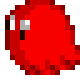
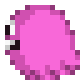
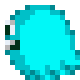
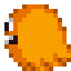
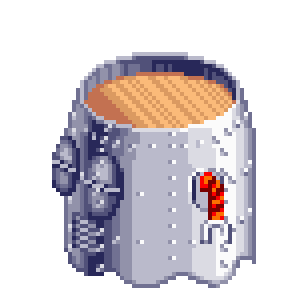
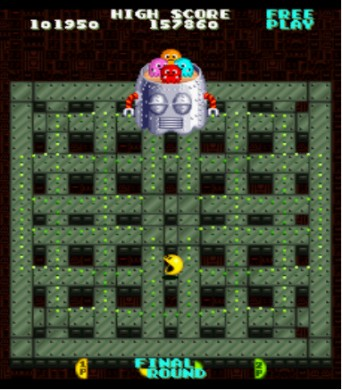

Here are the Ghosties that you will be facing
(Click on them to see what powers they hold)

!When Upgraded!

!When Upgraded!

!When Upgraded!

!When Upgraded!

- In the second part of the Final Battle between the Ghost Gang, You
face off against the Ghost Bot, who will chase you while you eat green
pellets everywhere on the stage.
- As you eat pellets, the bot will begin gaining speed and, with enough
pellets eaten, will go haywire and start bouncing from wall to wall,
aimlessly. During this time, it's best to watch the Ghost Bot's
trajectory as you eat more pellets. Once all eaten, grab the Pac-man
object on the maze. And, with that, you win!

Ghost Bot
